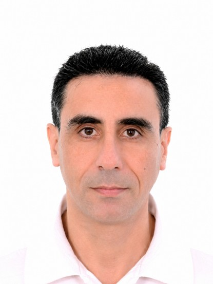

Dr. Mehrez Essafi
Intervenant
Dr. Mehrez Essafi est maître assistant à l’École Nationale des Sciences de l’Informatique (ENSI), Université de la Manouba, et chercheur au laboratoire RIADI. Ses travaux de recherche s’inscrivent à l’intersection du génie logiciel, de la sécurité des systèmes d’information, des architectures orientées services, du cloud computing et des infrastructures numériques de recherche.
Au cours de ses activités de recherche, il a contribué à plusieurs travaux portant sur le développement de logiciels sécurisés, la gouvernance de la sécurité des services web, la composition de services, la préservation de la confidentialité dans les environnements distribués et les modèles d’aide à la décision pour les architectures de services.
Il s’intéresse actuellement aux infrastructures de calcul mutualisées, à l’orchestration de services scientifiques, aux plateformes d’expérimentation basées sur Kubernetes ainsi qu’à la fédération des ressources de calcul pour soutenir les activités de recherche collaborative. Dans ce cadre, il participe notamment au projet euro-africain DIGITAfrica et au déploiement du nœud de recherche numérique de l’ENSI.